Manual de Usuario de qFT8
Tabla de Contenidos
- ¿Qué es qFT8?
- Configuración Rápida
- Tu Primer QSO con qFT8
- Introducción a los modos digitales FT
- Interfaz de Usuario de qFT8
- Operación automatizada (AUTO)
- Operación manual (CALL)
- Importación/Exportación de ADIF
- Integración con QRZ
- Integración con LoTW
- Summits On The Air (SOTA)
- Parks On The Air (POTA)
- Chat JS8
- Servidor Web de Control Remoto
- Solución de Problemas
¿Qué es qFT8?
qFT8 es una aplicación para teléfonos Android de radioafición que decodifica y transmite mensajes de datos digitales FT8, FT4, FT2 o JS8 utilizando un transceptor.


Aunque qFT8 ofrece soporte listo para usar (plug-and-play) para QMX e ICOM 7300, también puede usarlo con cualquier transceptor colocando el teléfono cerca del altavoz y el micrófono con VOX activado, o mediante un cable de audio. También puede simplemente probar qFT8 sin un transceptor: transmite usando el altavoz del teléfono y escucha las señales usando el micrófono del teléfono. Varios teléfonos con qFT8 pueden contactarse entre sí a través de audio cuando están lo suficientemente cerca.
qFT8 es una aplicación gratuita y no contiene anuncios. Es de código disponible (source available). El código fuente puede encontrarse en GitHub.
Luis Quesada Torres (HB9IPH) desarrolló qFT8 en 2026, posee los derechos de autor y se reserva todos los derechos.
qFT8 incluye partes de FT8CN (Copyright © 2023 BG7YOZ, MIT), ft8_lib (Copyright © 2018 Kārlis Gobas, MIT), KISS FFT (Copyright © 2003-2010 Mark Borgerding, BSD-3-Clause), usb-serial-for-android (Copyright © 2011-2020 Google Inc., Mike Wakerly, Andreas Butti, Kai Morich, BSD-3-Clause), Roboto (Copyright © 2015 Google Inc. / Christian Robertson, Apache-2.0), Natural Earth (Public Domain), hamradio-zones-geojson (Copyright © 2024 HB9HIL, HA8TKS, MIT) y Big CTY (Copyright © Jim Reisert AD1C). Ninguno de estos autores o proyectos de terceros respalda o está afiliado a qFT8.
Características Principales
- Configuración rápida
- Seguimiento de indicativos en lugar de mensajes
- Modo de operación manual (CALL) y automático (AUTO)
- Sincronización automática de tiempo NTP / GPS
- Ubicación aproximada automática
- Importación y exportación de registros ADIF
- Integración con QRZ / LoTW: upload, confirmaciones
- Lógica de reintento con límites configurables
- SOTA / POTA: modificador de CQ, exportado ADIF con referencia
- Servidor web para operación totalmente remota
- Modo de ahorro de batería: funciona con la pantalla apagada
Dispositivos Soportados
qFT8 admite tres formas principales de conectar su transceptor:
Transceptores Directos CAT/Audio (Control por Cable USB)
Estos transceptores son compatibles directamente a través de un cable USB, que maneja tanto el control CAT (para sintonización de frecuencia y transmisión PTT) como el audio USB de alta calidad:
- QRPLabs QMX o QMX+
- QRPLabs QDX o QDX-M (sin embargo, este dispositivo no tiene medidor de W o SWR)
- ICOM IC-7300 e ICOM IC-7300 MK2
- ICOM IC-705
- ICOM IC-7610
- ICOM IC-7851
- ICOM IC-7100
- ICOM IC-7200
- ICOM IC-9700
- ICOM IC-7600
- ICOM IC-7410
- ICOM IC-9100
- ICOM IC-7000
- ICOM IC-706MKIIG
- ICOM IC-746 / IC-746PRO
- ICOM IC-756PRO / PRO2 / PRO3
- ICOM IC-7700
- ICOM IC-7800 / IC-7850
- Yaesu FT-891
- Yaesu FT-710
- Yaesu FTX-1
- Yaesu FT-991 / FT-991A
- Yaesu FT-DX10
- Yaesu FTDX101
- Elecraft K4 / K4D / K4HD
- Elecraft K3 / K3S
- Elecraft KX3
- Elecraft KX2
- Elecraft KH1
- Elecraft K2 (requiere módulo KIO2)
- Xiegu X6100
- Xiegu X6200
- Serie Kenwood TS-480 / TS-590 / TS-2000
- FX-4CR
- QuantumSDR
- (tr)uSDX / uSDX+ / usdr
Nota sobre interfaces externas (Digirig, cables serie USB genéricos): La detección automática (AUTO) está diseñada para transceptores con controladores USB nativos o cables específicos de la marca. Al usar una interfaz externa genérica (como Digirig), la detección automática solo ve el chip de la interfaz genérica y se establece de forma predeterminada en el modo VOX. Para usar el control CAT con radios conectadas mediante interfaces externas (por ejemplo, Lab599 TX-500), seleccione manualmente su modelo de transceptor en el menú Ajustes del transceptor.
More devices are supported via VOX, which is a partial audio-only integration.
Nota: Por razones de seguridad, qFT8 no permite cambiar la potencia de transmisión del transceptor. Ajuste la potencia manualmente en su transceptor.
Otros transceptores
- Compatible a través de altavoces/micrófono, pero no es ideal
- Compatible a través de conexión de audio genérica
Configuración Rápida
Por favor, asegúrese de utilizar la fuente de alimentación adecuada para el transceptor (por ejemplo, ≤12V para un QMX) o lo dañará.
Asegúrese también de que el cable USB y adaptador que está utilizando para conectar el teléfono y el transceptor sea apto para transferencia de datos. Tenga en cuenta que para dispositivos que utilizan conectores distintos de USB-C, a menudo se requiere un cable OTG (on-the-go) específico. La mayoría de los problemas de conectividad donde qFT8 no detecta el transceptor se deben al uso de un cable o adaptador incompatible.
Conceder Permisos Iniciales
Al abrir qFT8 por primera vez, la aplicación solicitará varios permisos:
- Permitir que qFT8 grabe audio: Este permiso es obligatorio. qFT8 lo necesita para captar las señales del transceptor. qFT8 no almacena, comparte ni sube ninguna grabación de audio.
- Permitir que qFT8 acceda a la ubicación aproximada de este dispositivo: Opcional pero recomendado. qFT8 lo usa para obtener el localizador de cuadrícula Maidenhead, que se comparte durante los intercambios FT8. qFT8 no accede ni comparte datos de ubicación precisos.
- Permitir que qFT8 le envíe notificaciones: Opcional pero recomendado. qFT8 las usa para ejecutarse como un servicio en primer plano, mientras la aplicación está minimizada o el móvil tiene la pantalla apagada para ahorrar batería. Las notificaciones solo están activas cuando hay un transceptor conectado.
- Permitir que la aplicación siempre se ejecute en segundo plano: Opcional pero recomendado. Es necesario para que qFT8 funcione de manera constante mientras la pantalla está apagada.
Principio Clave: qFT8 no envía ninguna información a un servidor dedicado a esta aplicación. Todo el procesado de datos ocurre localmente en el dispositivo. Puede autorizar explícitamente compartir indicativo, fecha y hora, y opcionalmente ubicación aproximada si introduce una API Key de QRZ y la valida.
Para más detalles, consulte la Política de Privacidad de qFT8.
Introducir Indicativo (Callsign)
Introducir un indicativo es obligatorio para que qFT8 funcione. Si no tiene intención de conectarse a un transceptor real, puede introducir cualquier indicativo para fines de prueba, por ejemplo, XX1XXX.
qFT8 le pedirá que introduzca el indicativo y acepte lo siguiente:
- Debe poseer una licencia válida para usar este software mientras esté conectado a un transceptor.
- No debe ejecutar el software sin supervisión.
- Descargo de Responsabilidad: Al usar qFT8, usted asume toda la responsabilidad por el cumplimiento legal, la seguridad y daños en el equipo.
Conceder Permiso de Conexión USB
Cuando el transceptor esté enchufado y qFT8 esté abierta, aparecerá un cuadro de diálogo del sistema:
"¿Abrir qFT8 para gestionar Transceiver?"
- Este permiso es obligatorio para la comunicación con el transceptor.
- Si no se concede, qFT8 podrá recibir señales pero no podrá transmitir.
- Puede seleccionar "Abrir siempre qFT8 cuando Transceiver esté conectado" para mayor comodidad.
Si tiene problemas para conectar el dispositivo Android, consulte la sección de solución de problemas El dispositivo Android no reconoce el transceptor o este se desconecta.
qFT8 configura automáticamente el transceptor siempre que se conecta.
↑ Volver a la Tabla de Contenidos[Solo QMX] Verificación de Audio
Antes de comenzar a operar, es importante verificar que la señal de audio entre su teléfono y el QMX funcione correctamente. Pulse el botón TX y espere a que el QMX comience a transmitir en una de las siguientes secuencias.
Todo funciona correctamente
Si el botón TX muestra la potencia de salida (p. ej. 5 W), todo funciona correctamente. En la pantalla LCD del QMX, debería ver una barra debajo del marcador "A" VFO en la esquina superior izquierda de la pantalla — esto significa que el QMX está recibiendo una buena señal de audio del teléfono. También debe confirmar que no se muestra una "S" después de la frecuencia en la pantalla LCD, lo cual indicaría protección SWR.
"S" después de la frecuencia
Si la pantalla LCD del QMX muestra una "S" después de la frecuencia, significa que la protección SWR se ha activado. Su antena no está correctamente ajustada para la banda actual. Puede usar la opción de verificación de SWR en el menú del QMX para medir la SWR y deberá ajustar su antena.
- Firmware 1_04_004+: qFT8 restablece automáticamente la protección SWR al final del ciclo.
- Firmware 1_03_000+: Puede configurar la opción "SWR Protection reset options" como TX->RX en el menú de protección del QMX, para que se restablezca automáticamente.
- Firmware antiguo (anterior a 1_03_000): Debe entrar y salir del menú TUNE en el QMX o reiniciarlo (apagar/encender) para restablecer la protección SWR.
Dos puntos en lugar de una barra
Si el QMX muestra dos puntos en lugar de una barra debajo del marcador "A" VFO en la esquina superior izquierda de la pantalla, el volumen de audio es demasiado bajo o demasiado alto.
Intente lo siguiente: Vaya a los ajustes de qFT8, busque la opción "Set system volume to [X] when transmitting" y pruebe diferentes valores (p. ej. 70%, 80%, 60%, 100%). Alguno de estos debería convertir los dos puntos en una barra.
En algunos teléfonos, esta opción puede no funcionar. En ese caso, desmarque la opción y ajuste manualmente el volumen del teléfono a diferentes valores (100%, 90%, 80%, etc.) hasta que aparezca la barra.
Además, la corriente de modo común puede estar afectando el comportamiento del QMX, y agregar un choque de modo común a la antena también puede ayudar con los problemas de audio.
Nada debajo de la "A"
Si no hay ni barra ni puntos debajo del marcador "A" VFO en la esquina superior izquierda de la pantalla LCD del QMX, es posible que el teléfono no esté controlando correctamente el transceptor. Normalmente esto significa que los permisos USB no se concedieron o se descartaron accidentalmente. La recepción funcionará, pero la transmisión no.
Intente lo siguiente: Desconecte el QMX del teléfono y vuelva a conectarlo — el diálogo de permisos debería aparecer de nuevo. También puede ser que el cable no sea adecuado para el QMX; pruebe con un cable USB-C diferente.
Una vez que vea una barra debajo del marcador "A" VFO en la esquina superior izquierda de la pantalla LCD del QMX y potencia de salida en el botón TX, su QMX está correctamente configurado y listo para operar.
↑ Volver a la Tabla de Contenidos[Opcional] Importar QSOs
Ahora puede importar sus QSOs existentes; hay dos formas de hacerlo. Ambos métodos requieren ir a los ajustes utilizando el botón situado más a la derecha en la barra inferior de qFT8.
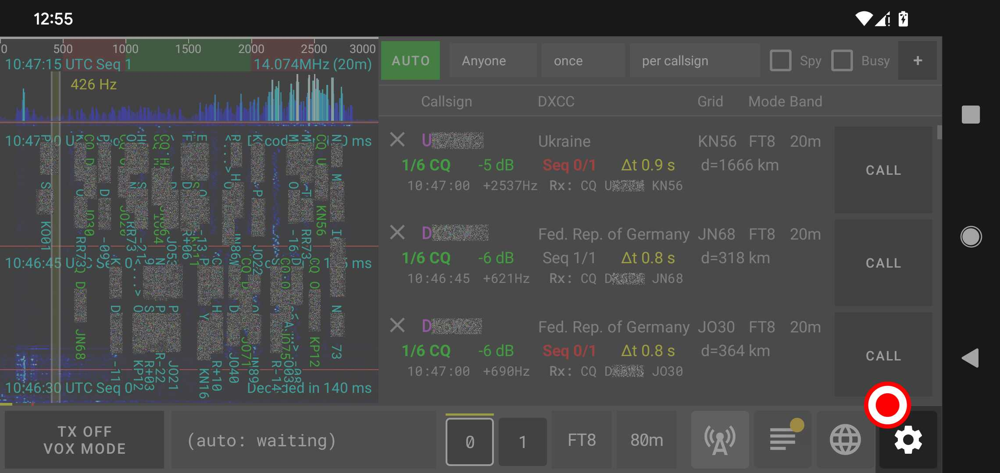
El método manual: Vaya a la sección "ADIF File Import" en los ajustes, pulse el botón "IMPORT QSOs" y seleccione el archivo .adi que desea importar.
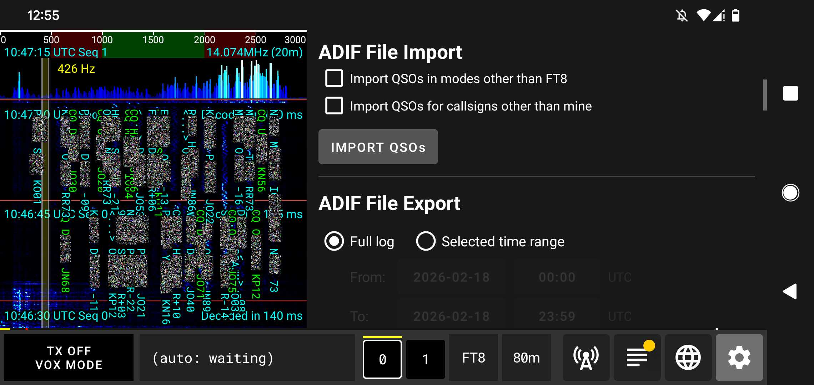
El método automático QRZ: Requiere una suscripción de pago activa en QRZ. Vaya a la sección "QRZ Syncing" en los ajustes, introduzca la API Key de QRZ del indicativo, pulse "VALIDATE", y luego haga clic en el botón "IMPORT QSOs FROM QRZ". Esto también configurará los uploads automáticos a QRZ y las comprobaciones de confirmación.
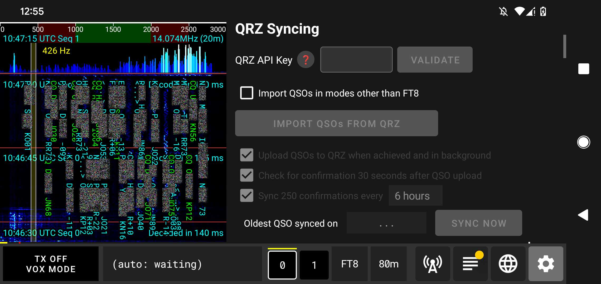
El método automático LoTW: Gratuito. Vaya a la sección "LoTW Syncing" en los ajustes, introduzca su Callsign y su LoTW password, y active la sincronización en segundo plano si lo desea. Esto también le permitirá realizar la "IMPORT QSOs FROM LoTW" inicial.
↑ Volver a la Tabla de ContenidosTu Primer QSO con qFT8
Nota: La precisión de la hora es crítica para FT8. qFT8 sincroniza automáticamente la hora al iniciar la aplicación mediante NTP (internet) o GPS (satélites). Si está operando en el campo sin acceso a Internet, puede utilizar el botón GPS SYNC en la pestaña de Ajustes para sincronizar su reloj directamente desde los satélites GPS. Esto requiere permiso de ubicación precisa y una vista despejada del cielo.
Llegados a este punto, el transceptor debería estar conectado a la fuente de alimentación adecuada y a la antena, y todos los permisos deberían haber sido concedidos. Asegúrese de que la antena esté sintonizada en una banda con una SWR razonable (idealmente por debajo de 2 de forma constante) que no active las protecciones de SWR. Es una mala idea desactivar la protección de SWR en el QMX; podría dañar los pasos finales o el sintonizador de antena.
Ahora puede elegir la banda que desea utilizar en la barra inferior de qFT8 o en el transceptor. Al configurarla en uno de ellos, se sincronizará en el otro.
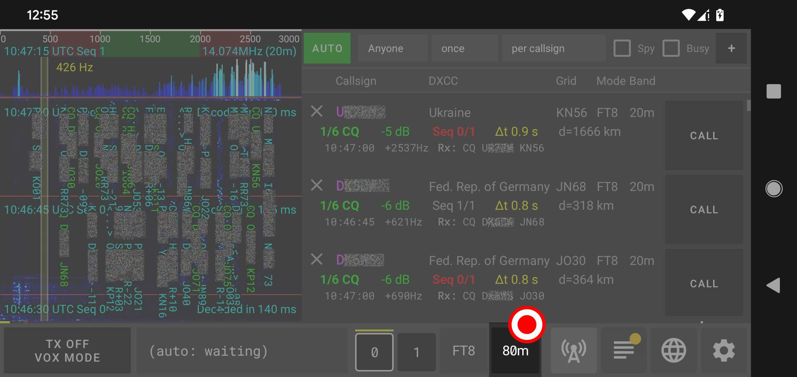
En este momento, el espectrograma mostrará señales y empezará a decodificar mensajes, y la pestaña de Estaciones se irá actualizando con las estaciones que se escuchen.
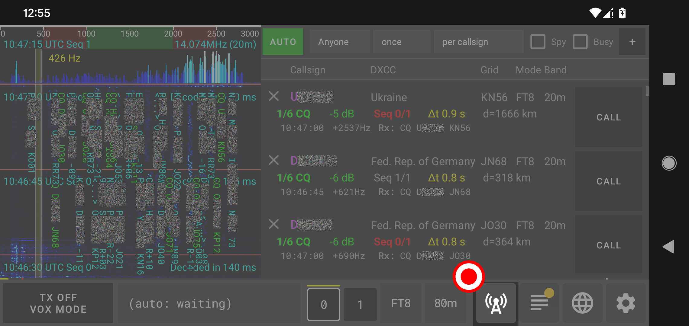
Al pulsar el botón TX (el botón situado más a la izquierda en la parte inferior) se habilitará la transmisión.
Si todo es correcto, el botón TX acabará iluminándose con "TX Transmitting" y mostrará la potencia de transmisión y la SWR (por ejemplo, "5.0W SWR 1.2").
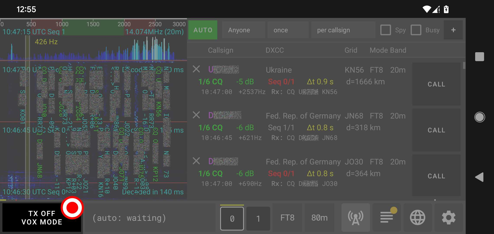
Dado que el modo "AUTO" está seleccionado por defecto, qFT8 empezará a realizar QSOs y a registrarlos en la pestaña de Registro (Log).
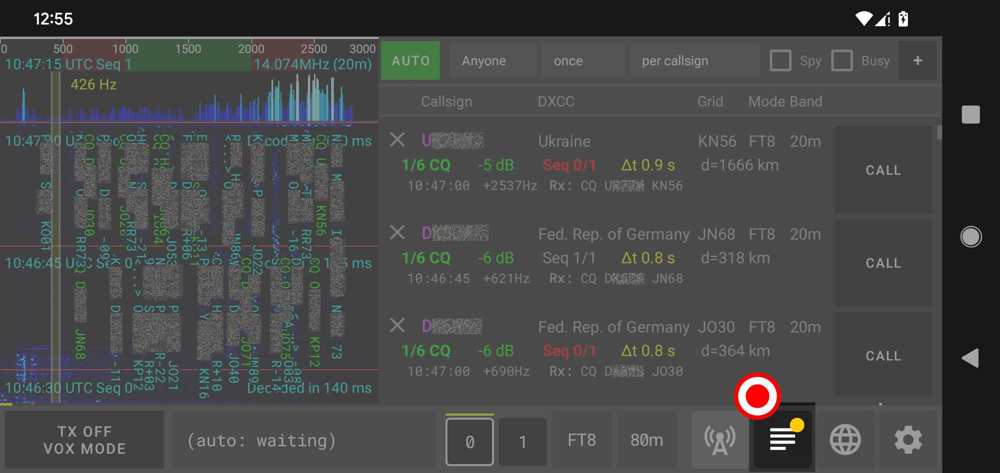
Puede pulsar en el espectrograma para cambiar el desplazamiento de la frecuencia de transmisión (Tx) (adicionalmente, pulsar en la parte superior del espectrograma, en la zona de los picos, le permite introducir una frecuencia manualmente), puede cambiar la secuencia pulsando los botones 0 y 1 en la barra inferior, puede pulsar los diferentes botones "CALL" para llamar a estaciones específicas, o puede ajustar la barra con el botón "AUTO" en la pestaña de Estaciones para decidir la estrategia. Puede encontrar más información sobre estas funciones avanzadas en las siguientes secciones.
Tenga en cuenta que qFT8 empezará a llamar a estaciones o, si ninguna de ellas es alcanzable, empezará a llamar CQ. Con el tiempo, si todo está correctamente configurado y la propagación es buena, qFT8 logrará realizar QSOs.
Si qFT8 no recibe señales adecuadas y no decodifica mensajes, es una señal clara de que algo va mal: la propagación en esa banda puede estar cerrada, la antena puede no estar bien sintonizada, la antena puede no estar bien conectada al transceptor, el transceptor puede no estar bien conectado al móvil, o alguno de sus equipos puede no estar funcionando correctamente. Consulte la sección de solución de problemas más abajo para ver los problemas comunes.
↑ Volver a la Tabla de ContenidosIntroducción a los modos digitales FT
qFT8 es compatible con los modos digitales FT8, FT4, FT2 y JS8. FT4 es un protocolo digital exactamente igual a FT8 pero diseñado para ser el doble de rápido (operando en ciclos de 7.5 segundos en lugar de ciclos de 15 segundos). La implementación compatible de FT2 (original) es exactamente igual a FT4 pero diseñada para ser el doble de rápida. JS8 utiliza la misma codificación que FT8, con diferentes velocidades y ancho de banda, con una capa diferente para la división de mensajes.
FT8 es un protocolo digital diseñado para propagación esporádica-E multi-salto y otras condiciones de señal débil. Se caracteriza por sus mensajes estructurados y una sincronización precisa.
Ciclos y Secuencias
FT8 funciona en ciclos de 15 segundos. Cada ciclo de comunicación está estrictamente temporizado, comenzando exactamente en los segundos 00, 15, 30 y 45 de cada minuto. Por esta razón, el reloj del dispositivo debe estar sintonizado con precisión con la hora UTC.
Existen dos secuencias dentro del protocolo:
- Secuencia 0: Ciclos que comienzan en los segundos 00 y 30.
- Secuencia 1: Ciclos que comienzan en los segundos 15 y 45.
Las estaciones generalmente alternan entre transmitir y recibir. Una estación que transmite en la Secuencia 0 escuchará una respuesta en la Secuencia 1, y viceversa. Dentro de cada ciclo de 15 segundos, el mensaje se transmite en una ventana de aproximadamente entre los segundos +0.5s y +13s. Esto deja tiempo al final del ciclo para la decodificación y al principio para preparar la siguiente transmisión.
Características de la Señal
Cada mensaje FT8 se transmite como una secuencia de tonos con ligeras variaciones de frecuencia. Una señal FT8 es muy estrecha, ocupando solo unos 50Hz de ancho de banda. Esta eficiencia permite que decenas de conversaciones simultáneas quepan dentro de una única banda de radio de 3kHz.
Las 6 Etapas de un QSO
Un contacto FT8 estándar suele pasar por seis etapas. Aquí tiene un ejemplo de un intercambio entre HB9IPH y XX1XXX:
- 1/6 CQ: Una estación busca a
alguien con quien hablar.
Ejemplo:CQ HB9IPH JN47
Nota:JN47es un localizador de cuadrícula Maidenhead, que indica la ubicación geográfica aproximada de la estación. También puede haber un modificador de CQ, que es una nota para otros operadores (por ejemplo,CQ SOTA HB9IPHpara el programa Summits On The Air, oCQ US HB9IPHcuando se intenta contactar con alguien en EE.UU.). Es posible que tanto el modificador como la ubicación no quepan en el mismo mensaje; en tales casos, se omite la ubicación. Si el indicativo es muy largo, ¡es posible que ni la ubicación ni el modificador quepan en el CQ! - 2/6 CALL: Otra estación
responde al CQ.
Ejemplo:HB9IPH XX1XXX JO21
Nota: Quien responde también comparte la ubicación (JO21), que puede omitirse si los indicativos son demasiado largos para que quepa todo. - 3/6 RPT: La primera estación
envía un reporte de señal.
Ejemplo:XX1XXX HB9IPH -10
Nota: El reporte de señal (por ejemplo,-10) indica la fuerza de la señal en relación con el suelo de ruido en dB. - 4/6 RRPT: La segunda estación
confirma el reporte y envía el suyo propio.
Ejemplo:HB9IPH XX1XXX R-12
Nota: El prefijo "R" confirma que se ha recibido el reporte anterior, seguido del reporte de señal para la primera estación. - 5/6 RR73: La primera estación
confirma todo y envía un "Roger-Roger 73".
Ejemplo:XX1XXX HB9IPH RR73 - 6/6 73: La segunda estación
envía un "73" final para cerrar el contacto.
Ejemplo:HB9IPH XX1XXX 73
Debido al problema de los dos generales, es teóricamente imposible saber con certeza que la otra estación recibió su última comunicación a menos que lo confirmen. Sin embargo, entonces usted tendría que confirmar su confirmación, y ellos tendrían que confirmar eso, y así sucesivamente. El modo digital FT8 mitiga esto mediante etapas estructuradas: un QSO puede considerarse técnicamente completo después de la etapa 4/6 (cuando se han intercambiado ambos reportes de señal). En la práctica, para asegurar que ambas estaciones están de acuerdo en que el intercambio ocurrió, un QSO se registra cuando una estación ha recibido un RR73 y ha enviado un 73. Efectivamente, tanto transmitir un RR73 como un 73 activa el registro del QSO en el log.
Tenga en cuenta que las estaciones también pueden llamar a otras estaciones aunque no hayan transmitido un CQ primero. Por ejemplo, las estaciones en ubicaciones raras pueden tener un "pile-up" de muchas estaciones llamándolas simultáneamente; en tales casos, la estación rara puede simplemente pasar de un QSO al siguiente sin necesidad de invitar a nuevos corresponsales con un CQ.
Algunas estaciones pueden usar RRR en lugar de RR73 en la etapa 5. En ese caso, el contacto requiere un intercambio extra: la segunda estación envía 73, y luego la primera estación vuelve a enviar 73 para terminar.
FT8 también admite mensajes de texto libre (de hasta 13 caracteres), pero qFT8 no admite actualmente el envío de estos mensajes personalizados.
Limitaciones del Protocolo y Alternativas
Los mensajes FT8 están altamente comprimidos en 77 bits. A veces, la información compleja (como indicativos largos o no estándar) no cabe en el formato de mensaje estándar.
- Indicativos con Hash: Si un indicativo es demasiado largo, puede enviarse como un
hash. Si la estación receptora ha visto ese indicativo llamando CQ recientemente, el software puede
mapear el
hash de nuevo al indicativo original. De lo contrario, se mostrará como
<...>. Es mucho más difícil lograr QSOs cuando tu indicativo no es estándar. - Alternativa de Texto Libre: Algunos mensajes pueden verse forzados al formato de texto libre de 13 caracteres, que es menos robusto que los mensajes estructurados estándar.
- Indicativos no estándar: Si dos estaciones usan indicativos no estándar muy largos, pueden ser técnicamente imposible que se comuniquen entre sí utilizando el modo digital FT8.
- Salto de Etapas: Si los indicativos son demasiado largos, el protocolo puede no ser capaz de incluir los reportes de señal (stages 3/6 and 4/6). En estos casos, el intercambio puede saltar directamente desde la llamada inicial (CALL (2/6)) a las confirmaciones finales (5/6 and 6/6).
Interfaz de Usuario de qFT8
La aplicación qFT8 se divide en tres partes:
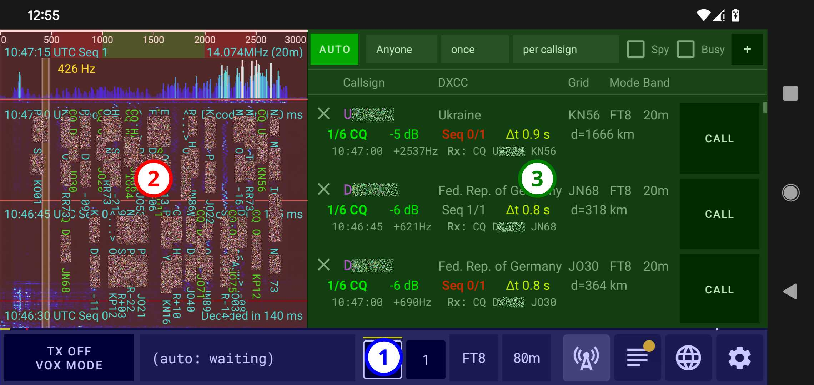
- La barra inferior: Siempre visible, para supervisar y controlar la transmisión y para gestionar qFT8.
- El espectrograma (Waterfall): Siempre visible, para ver los mensajes decodificados, ver la hora UTC en directo y la frecuencia sintonizada, y controlar el desplazamiento de la frecuencia de transmisión.
- El área de pestañas: Muestra una de las cuatro pestañas (Estaciones, Registro o Log, Mapa mundial y Ajustes). Se puede controlar cuál se muestra usando los botones situados en la parte más a la derecha de la barra inferior.
Las siguientes secciones describen todos estos componentes en detalle.
La barra inferior
La barra inferior muestra información importante: el estado de armado/desarmado de la transmisión, si qFT8 está transmitiendo, la potencia de transmisión, la Relación de Ondas Estacionarias (SWR), el mensaje que se está transmitiendo, la secuencia actual y la seleccionada, el selector de banda y los botones para navegar por las diferentes pestañas.
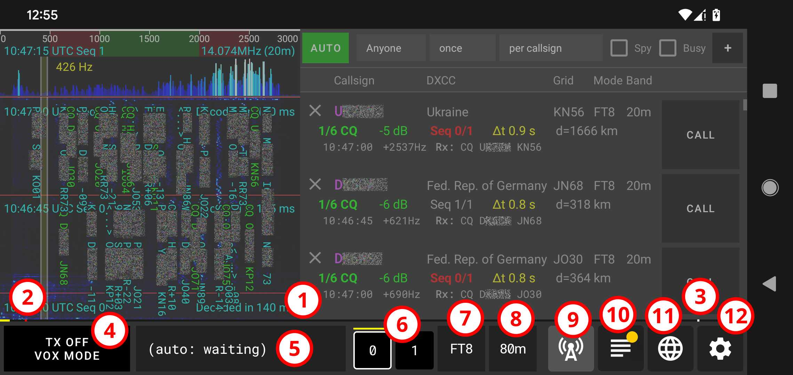
Estos son los componentes de la barra inferior en detalle:
- La barra de progreso del ciclo: La barra amarilla comienza a los 0s dentro del ciclo (extremo izquierdo) y termina a los 15s dentro del ciclo (extremo derecho).
- El marcador de activación de Tx: El punto rojo en la parte izquierda de la barra indica el momento de activación de la Tx. Si la Tx está activada (punto #4) y la secuencia actual es la secuencia seleccionada (punto #6), la transmisión comienza en este punto.
- El marcador de tiempo de decodificación: El punto blanco en la parte derecha de la barra indica el tiempo de decodificación, es decir, cuando se decodifican los mensajes a partir de las señales recibidas y se procesan posteriormente.
- El botón TX: Puede estar desarmado (OFF) o armado (ON). También muestra cuándo se está transmitiendo, la potencia de transmisión y la SWR. En firmwares de QMX superiores a 1_04, este botón mostrará "HOLD: TUNE". Mantener presionado el botón activará el modo de sintonía y reportará la SWR en vivo.
- El selector de mensaje: Muestra el mensaje seleccionado para ser enviado o que se está enviando (en cuyo caso, se resalta en amarillo). En modo AUTO, se gestiona automáticamente. En modo CALL también se gestiona automáticamente por defecto, pero se puede pulsar para seleccionar manualmente el siguiente mensaje a enviar.
- El selector de secuencia: La línea amarilla sobre los botones muestra la secuencia actual (0 o 1). Pulsar sobre el 0 o el 1 selecciona esa secuencia para las transmisiones salientes.
- El selector de modo: Cambia el modo de transmisión utilizado (por ejemplo, FT8, FT4, FT2 o JS8).
- El selector de banda: Cuando hay un transceptor conectado, cambia la banda en el transceptor.
- El botón de la pestaña Estaciones: Abre la pestaña que enumera todas las estaciones que ha escuchado o con las que puede comunicarse.
- El botón de la pestaña Registro (Log): Abre la pestaña que enumera todos los QSO que ha realizado. Este botón estará marcado con un punto amarillo si tiene QSOs que no han sido subidos a QRZ.
- El botón de la pestaña Mapa mundial: Abre la pestaña que muestra el mapa mundial interactivo.
- El botón de la pestaña Ajustes: Abre la pestaña para configurar qFT8.
El espectrograma (Waterfall)
El espectrograma muestra una vista de picos y el waterfall con las señales y mensajes entrantes, señales y mensajes salientes, marcadores para el cambio de secuencia anotados con la hora UTC y el tiempo de decodificación, y el desplazamiento de frecuencia seleccionado para la transmisión.
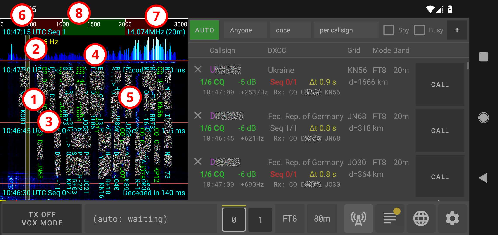
Estos son los componentes del espectrograma en detalle:
- Vista de Waterfall: Muestra el historial reciente de las señales recibidas a lo largo del tiempo. Al pulsar en esa vista se cambiará el desplazamiento de frecuencia seleccionado.
- Picos en tiempo real: Muestran la fuerza instantánea de las señales en todo el rango de frecuencias. Al pulsar en esa vista se abrirá un cuadro de diálogo para ingresar el desplazamiento de frecuencia seleccionado con precisión.
- Separadores de secuencia: Estas líneas horizontales rojas actúan como separadores visuales de los ciclos, y están anotadas con la hora UTC y el time invertido en la decodificación.
- Desplazamiento de frecuencia seleccionado: Esta superposición amarilla vertical en el espectrograma indica el desplazamiento de frecuencia seleccionado actualmente para la transmisión.
- Mensajes entrantes, mostrados con código de colores:
- Verde: Mensajes de CQ.
- Celeste: Mensajes entre otras estaciones.
- Amarillo: Sus mensajes transmitidos.
- Naranja: Mensajes entrantes dirigidos a usted.
- Hora UTC y secuencia actuales: Se muestran en la parte superior del waterfall.
- Frecuencia sintonizada y banda: Frecuencia y banda a la que está sintonizado actualmente el transceptor.
- Eje de frecuencias: Muestra la escala de frecuencia en Hz dentro de la banda seleccionada.
La pestaña de Estaciones
La pestaña de Estaciones es el centro de mando para monitorizar la actividad en la banda y operar qFT8. Cuenta con controles de filtrado y automatización en la parte superior, seguidos de una lista de estaciones activas.
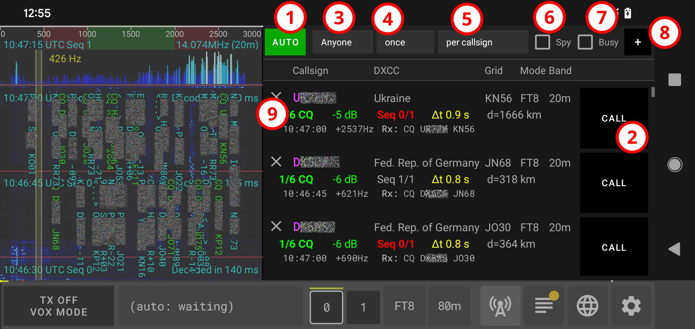
Estos son los componentes de la pestaña de Estaciones en detalle:
- Botón de modo de llamada AUTO: Al activar "AUTO", qFT8 intentará llamar a la mejor estación según los criterios seleccionados por el usuario.
- Botón de modo de llamada CALL manual: Al activar "CALL" para una estación, qFT8 insistirá en llamar a esa estación hasta lograr un QSO, y luego volverá a "AUTO".
- Objetivo: Establece los criterios para el modo
AUTO:
- Anyone (Cualquiera): Cualquier indicativo con el que aún no haya realizado un QSO.
- Nearby (Cercanas): Prioriza estaciones más cercanas según la distancia de cuadrícula Maidenhead.
- Far (Distantes): Prioriza estaciones más lejanas según la distancia de cuadrícula Maidenhead.
- Signal strength (Fuerza de señal): Prioriza estaciones con la señal más fuerte (SNR).
- Call CQ (Llamar CQ): Simplemente llama CQ y responde a cualquier estación que llame a la suya.
- POTA hunter: Prioriza estaciones de Parks on the Air.
- SOTA hunter: Prioriza estaciones de Summits on the Air.
- POTA + SOTA hunter: Prioriza tanto estaciones de Parks on the Air como de Summits on the Air, luego las demás estaciones, ordenadas por SNR.
- DXCC: Prioriza nuevos países/entidades.
- Grid (Cuadrícula): Prioriza nuevos cuadros de la cuadrícula Maidenhead.
- ITU zone (Zona ITU): Prioriza nuevas zonas ITU.
- CQ zone (Zona CQ): Prioriza nuevas zonas CQ.
- I/C/D/G: Prioriza primero la zona ITU, luego la zona CQ, luego DXCC y finalmente Grid.
- Periodicidad: Con qué frecuencia contactar con ese objetivo:
- once: Una vez en la vida.
- daily: Diariamente, una vez por fecha UTC.
- weekly: Semanalmente, una vez cada ventana de 7 días.
- monthly: Mensualmente, una vez cada ventana de un mes.
- yearly: Anualmente, una vez cada ventana de un año.
- Calificador: Cómo se aplican esas restricciones:
- per callsign (por indicativo)
- in different bands (en bandas diferentes)
- in different modes (en modos diferentes)
- until zone confirmed (hasta que la zona esté confirmada)
- per band+until zone (por banda + hasta que la zona esté confirmada)
- per mode+until zone (por modo + hasta que la zona esté confirmada)
- in different bands or modes (en bandas o modos diferentes)
- per band/mode+until zone (por banda/modo + hasta que la zona esté confirmada)
- Modo Spy (Espía): Cuando está activado, qFT8 también intentará llamar a estaciones que aún no ha escuchado llamar a CQ (marcadas como DIRECT). Esto es útil para tener más estaciones al alcance y unirse a pile-ups.
- Modo Busy (Ocupado): Cuando está activado, qFT8 también intentará llamar a estaciones entabladas en un QSO con otra persona (marcadas como BUSY). Esto es útil para unirse a un pile-up.
- Botón +: Llama manualmente a cualquier estación arbitraria introduciendo su indicativo.
- Información de la estación: Muestra el estado detallado de cada estación decodificada.
Las entradas individuales de las estaciones consisten en cuatro filas ricas en información:
La primera fila muestra los detalles de la estación (de izquierda a derecha):
- Estado del QSO: Indica su historial de QSO con esta estación (✗ = sin QSO, ✓ = registrado localmente, ★ = confirmado vía QRZ o LoTW).
- Indicativo (Callsign): El indicativo de la estación.
- DXCC: El país o entidad al que pertenece el indicativo de esta estación.
- Celda de la cuadrícula: La casilla de la cuadrícula Maidenhead que esta estación está reportando.
- Zona CQ: La zona CQ a la que pertenece el indicativo de esta estación.
- Zona ITU: La zona ITU a la que pertenece el indicativo de esta estación.
- Banda: La banda en la que se escuchó la estación por última vez.
La segunda fila muestra el estado de la comunicación (de izquierda a derecha):
- Estado: Fase actual de la comunicación:
- DIRECT: Escuchada y aparentemente libre en este momento, pero nunca llamó a CQ.
- 1/6 CQ: Escuchada llamando a CQ y aparentemente libre en este momento.
- 2/6 CALL: Le ha llamado.
- 3/6 RPT: Le ha enviado un reporte de señal.
- 4/6 RRPT: Ha respondido al reporte con el suyo propio.
- 5/6 RR73: Ha confirmado el reporte con RR73.
- 6/6 DONE: QSO completado (73 intercambiados).
- GONE: No escuchada en los últimos ciclos.
- TOO LONG: Los indicativos de la estación local y remota son demasiado largos en combinación para establecer una comunicación, según los límites del modo digital FT8.
- Potencia de la señal: Potencia en dB (muestra "????" si no se ha escuchado recientemente).
- Secuencia: La última secuencia en la que se escuchó transmitir a esta estación (0 o 1).
- Diferencia de tiempo (Δt): Desplazamiento de sincronización horaria en segundos entre la hora y la de ellos.
- Distancia: Distancia estimada entre el cuadro de cuadrícula de la estación y el de ellos.
La tercera y cuarta fila muestran los últimos mensajes transmitidos y recibidos, incluyendo la hora UTC, el desplazamiento de frecuencia y el texto del mensaje (con el prefijo Rx: o Tx:).
Principales indicadores visuales a tener en cuenta:
- Indicativo en rojo: El modo AUTO ha superado el límite de reintentos para esta estación. Se ignorará temporalmente a menos que pulse "CALL" para restablecerlo manualmente.
- Indicativo en morado: Este indicativo es un objetivo según sus criterios actuales.
- Indicativo en gris: El indicativo coincide con su configuración de prefijos excluidos (separados por comas). El modo AUTO nunca se dirigirá a esta estación.
- Zona resaltada en morado: Esta zona/entidad (DXCC, Grid, zona CQ, zona ITU) es un objetivo según sus criterios actuales.
- Número de secuencia en rojo: La estación está en la misma secuencia que usted ha seleccionado, lo que provoca un conflicto. Al pulsar "CALL", su secuencia cambiará automáticamente.
- Banda en rojo: La estación se escuchó por última vez en una banda diferente.
Las estaciones se ordenan automáticamente por relevancia. Al cambiar sus criterios de objetivo o restricciones, la lista se reordenará inmediatamente.
↑ Volver a la Tabla de ContenidosLa pestaña de Registro
La pestaña de Registro muestra los QSO realizados.
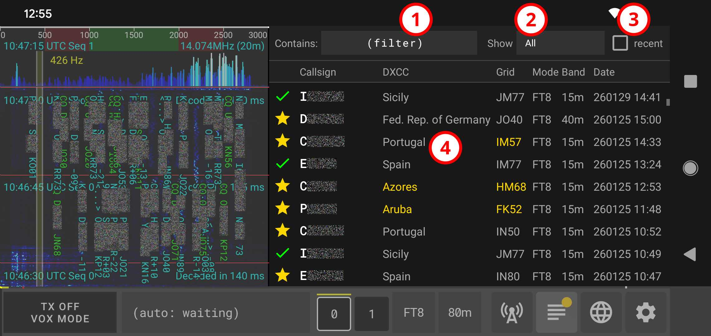
Estos son los componentes de la pestaña de Registro en detalle:
- Filtro de texto por indicativo: Un filtro para los QSO basado en si el indicativo contiene el texto introducido.
- Filtro de estado: Un filtro para los
QSO que muestra:
- All (Todos): Muestra todos los QSO registrados.
- Confirmed (Confirmados): Muestra solo los QSO que han sido confirmados.
- Not confirmed (No confirmados): Muestra los QSO que aún no están confirmados.
- Not uploaded (No subidos): Muestra los QSO que no se han subido a QRZ.
- Duplicated (Duplicados): Muestra los QSO que QRZ reconoce como duplicados.
- Rejected (Rechazados): Muestra los QSO que fueron rechazados por la otra estación en QRZ.
- Wrong Callsign (Indicativo erróneo): Muestra los QSO registrados con un indicativo diferente al configurado actualmente.
- Non FT8/FT4 (No FT8/FT4): Muestra los QSO registrados para un modo distinto de FT8 o FT4.
- Filtro de límite reciente: Un filtro que muestra solo los 100 QSO más recientes con los criterios dados.
- La lista de QSO: Muestra las
entradas del registro con las siguientes columnas (de izquierda a derecha):
- QRZ: Indica su
historial con esta estación:
- ✗: Sin registros de QSO.
- ✓: Registrado localmente / Pendiente de subir.
- ✓🕒: Subido a LoTW, pendiente de confirmación.
- ✓: Subido a QRZ.
- ★: Confirmado en QRZ o LoTW (para QSOs subidos a QRZ) o manualmente.
- ♻️: Reportado como duplicado por QRZ.
- ❕: Discrepancia en el indicativo de la estación, ya subido.
- ⚠️: Discrepancia en el indicativo de la estación, no subido.
- ⛔: Estado rechazado.
- Indicativo (Callsign): El indicativo de la estación.
- DXCC: El país o entidad al que pertenece el indicativo de esta estación.
- Cuadro de la cuadrícula: El cuadro de la cuadrícula Maidenhead que esta estación está reportando.
- Zona CQ: La zona CQ a la que pertenece el indicativo de esta estación.
- Zona ITU: La zona ITU a la que pertenece el indicativo de esta estación.
- Banda: La banda en la que se escuchó la estación por última vez.
- QRZ: Indica su
historial con esta estación:
Principales indicadores visuales a tener en cuenta:
- Nota amarilla debajo del indicativo: Este QSO es para una estación diferente a la configurada.
- Zona resaltada en verde (DXCC, Grid, zona ITU, zona CQ): Este fue el primer QSO no confirmado en el registro para esta zona.
- Zona resaltada en amarillo (DXCC, Grid, zona ITU, zona CQ): Este fue el primer QSO confirmado en el registro para esta zona.
Editar QSO: Al pulsar sobre cualquier QSO de la lista se abrirá un cuadro de diálogo que permite marcar manualmente un QSO como confirmado/no confirmado localmente en qFT8, o eliminar un QSO localmente en qFT8. Tenga en cuenta que estas acciones son solo locales y no se sincronizan con QRZ. Eliminar un QSO en la aplicación es irreversible, a menos que conserve una copia exportada del archivo de registro o que haya sido subido a QRZ.
↑ Volver a la Tabla de ContenidosLa pestaña del Mapa mundial
La pestaña del Mapa mundial muestra un mapa global interactivo en tiempo real con la geografía de las estaciones, el tráfico decodificado, sus logros de QSO y las condiciones solares de propagación.
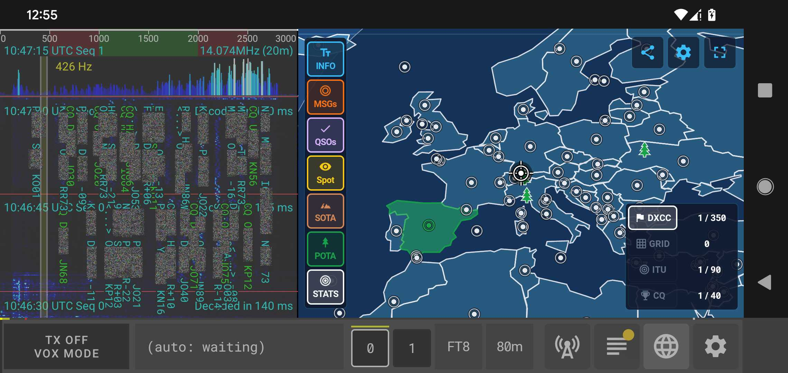
Estos son los componentes y funciones de la pestaña del Mapa mundial en detalle:
- Lienzo del mapa interactivo y controles:
- Navegación: Arrastre para desplazarse suavemente por el globo con ajuste horizontal continuo a través del antimeridiano. Pellizque con dos dedos para acercar o alejar el zoom.
- Temas del mapa: Cambie entre cuatro estilos visuales (Futuro brillante, Consola, Tierra y Azul medianoche) desde la barra de herramientas superior.
- Coordenadas HUD: Muestra en tiempo real las coordenadas geográficas (latitud, longitud) y el localizador de cuadrícula Maidenhead bajo la posición de su toque.
- Barra de herramientas izquierda (Conmutadores de información y capas):
- INFO: Alterna las tarjetas de información superpuestas en pantalla (hora, terminador solar, posición subsolar y coordenadas de la retícula).
- MSGs: Alterna los marcadores de mensajes directos enviados específicamente a su estación (Rosa).
- QSOs: Alterna los marcadores de contactos de su sesión reciente (Ámbar para registrados, Esmeralda para confirmados).
- Spot: Alterna las señales de tráfico decodificadas en vivo en la banda (Verde para CQ, Cian para RX, Rojo para TX) y los observadores inversos de PSKReporter (Rombos naranjas).
- SOTA: Alterna las referencias de cumbres de Summits On The Air y los activadores de cumbres activos (⛰️).
- POTA: Alterna las referencias de parques de Parks On The Air y los activadores de parques activos (🌲).
- STATS: Alterna el panel de estadísticas resumidas que muestra el recuento total de registrados y confirmados para la capa de límites activa.
- Barra de herramientas derecha (Logros y capas de límites):
- DXCC: Muestra los límites de países y territorios codificados por color según el estado en su registro (Verde para registrado/no confirmado, Amarillo para confirmado). Las islas pequeñas y microentidades aparecen como marcadores visibles.
- GRID: Cuadrículas globales Maidenhead (campos y cuadros de 4 caracteres) con relleno de logros.
- ITU: Superpone las 90 zonas de radio de la ITU con relleno de logros.
- CQ: Superpone las 40 zonas WAZ de la revista CQ con relleno de logros.
- Tarjeta de detalles de la entidad y acción rápida CALL:
Al pulsar sobre cualquier estación, spot, parque o cumbre se abre una tarjeta de detalles informativa que muestra:
- Indicativo o nombre de referencia, entidad DXCC y título del parque/cumbre.
- Texto del mensaje decodificado, frecuencia, banda y modo.
- Fuerza de la señal (SNR) o reporte de señal (RST).
- Localizador de cuadrícula, distancia (km / mi), rumbo (°) y tiempo transcurrido.
- Botón CALL: Inicia instantáneamente el contacto con la estación (cambiando automáticamente de banda y modo de operación si es necesario).
La pestaña de Ajustes
La pestaña de Ajustes permite configurar qFT8.
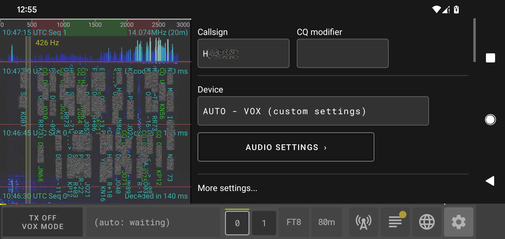
La pestaña de Ajustes está organizada de la siguiente manera:
- Indicativo (Callsign): Su indicativo de radioaficionado (obligatorio para transmitir). Debe coincidir con su licencia.
- Modificador de CQ (CQ modifier): Texto opcional que se añade a sus llamadas de CQ (por ejemplo, "SOTA").
- Dispositivo (Device): Configura y selecciona su transceptor de radio (por ejemplo, QMX, QDX, Serie Kenwood TS-480 / TS-590 / TS-2000 o VOX/Solo audio) y los parámetros de conexión.
Submenús y Opciones
- AJUSTES DE AUDIO (AUDIO SETTINGS): Configura el volumen de transmisión, los umbrales de VOX y otros ajustes de audio.
- IMPORTAR/EXPORTAR REGISTROS (IMPORT/EXPORT LOGS): Importa o exporta su libro de guardia utilizando archivos ADIF estándar (.adi).
- SINCRONIZACIÓN DE QSO (QSO SYNCING): Configura la integración con QRZ y LoTW para la sincronización y verificación de registros.
- AJUSTES DE LA APLICACIÓN (APPLICATION SETTINGS): Ajustes generales, incluido el idioma de la interfaz de usuario.
- HORA Y UBICACIÓN (TIME AND LOCATION): Configura la sincronización del reloj (NTP o GPS) y su localizador Maidenhead.
- AJUSTES DE MODO AUTO (AUTO MODE SETTINGS): Configura las preferencias de automatización, número de reintentos y prefijos excluidos.
- AJUSTES DE MODO (MODE SETTINGS): Ajusta los algoritmos de decodificación FT8, retrasos de inicio/PTT y otras opciones de decodificación.
- SELECCIÓN DE BANDA (BAND SELECTION): Personaliza las bandas activas y el comportamiento de cambio de banda.
- SERVIDOR WEB DE CONTROL REMOTO (REMOTE CONTROL WEB SERVER): Habilita y configura el servidor web integrado para el control remoto.
- LIMPIEZA (CLEAN UP): Borra los QSO locales (esta acción solo afecta al registro local de la aplicación).
Operación automatizada (AUTO)
El modo AUTO es la forma principal de utilizar qFT8. En este modo, la aplicación analiza automáticamente los mensajes decodificados al final de cada ciclo y selecciona la estación más relevante para contactar basándose en sus criterios de objetivo.
Cómo funciona la selección de objetivos
La pestaña de Estaciones muestra una lista de estaciones activas, ordenadas de manera que los candidatos más relevantes (según sus criterios) aparezcan al principio. Al final de cada ciclo de decodificación, qFT8 consulta esta lista ordenada e intenta llamar a la primera estación elegible. Si no se encuentra ningún objetivo elegible, comenzará automáticamente a llamar CQ para atraer interlocutores. qFT8 siempre contesta a llamadas de interlocutores cuando está en modo AUTO.
Criterios y filtros
Puede ajustar la automatización utilizando los tres menús desplegables de la parte superior de la pestaña Estaciones:
- Objetivo (Target): Define qué "logro" está buscando (Anyone, DXCC, CQ zone, ITU zone, Grid).
- Intervalo: Con qué frecuencia está dispuesto a contactar con la misma entidad (Once, Always, Daily, Weekly, Monthly).
- Calificador: Acota el requisito de unicidad (Per callsign, Per band, Until zone/entity confirmed).
Intervención manual: Siempre puede intervenir manualmente pulsando el botón CALL de una estación específica. Esto activa el modo CALL para ese QSO específico. Una vez finalizado, qFT8 vuelve sin problemas al modo AUTO.
Mecanismo de reintento
Para evitar que qFT8 llame indefinidamente a una estación que no responde, qFT8 ofrece un sistema integrado de reintentos y bloqueos, habilitado por defecto. Puede configurarlos en la pestaña Ajustes, en Lógica de reintento:
- Límite de reintentos: El número máximo de veces que qFT8 repetirá una etapa de transmisión para una estación que no responde.
- Ventana de reintentos: El periodo de tiempo durante el cual se contabilizan estos intentos.
- Enfriamiento de reintento: Si se alcanza el límite, la estación queda "Bloqueada" durante este tiempo. El modo AUTO ignorará las estaciones bloqueadas hasta que expire el tiempo o la estación responda.
Configuraciones optimizadas de ejemplo
A continuación se muestran algunas combinaciones recomendadas de criterios para objetivos comunes:
| Objetivo | Target | Interval | Condition |
|---|---|---|---|
| Maximizar estaciones únicas | Anyone | Once | Per callsign or zone |
| Maximizar estaciones únicas por banda | Anyone | Once | In different bands |
| Maximizar entidades DXCC únicas | DXCC | Once | Per callsign or zone |
| Maximizar DXCC únicas por banda | DXCC | Once | In different bands |
| Maximizar entidades DXCC confirmadas | DXCC | Once | Until zone confirmed |
| Maximizar DXCC confirmadas por banda | DXCC | Once | Per band + Until zone |
| Coleccionar Grids únicas por banda | Grid | Once | Per band + Until zone |
| Trabajar todas las zonas (CQ/ITU) | I/C/D/G | Once | Until zone confirmed |
| Concurso: Estaciones únicas en diferentes bandas | Anyone | Once | In different bands |
| Concurso: Puntos por la misma estación en diferentes días | Anyone | Daily | In different bands |
Tenga en cuenta que en todos estos casos, puede activar Spy y Busy para llegar a más estaciones y entrar en sus pile-ups.
Nota: Si su indicativo no es estándar (p. ej. con sufijos o prefijos separados por "/", indicativos largos u otros indicativos con números en posiciones raras), probablemente querrá establecer el Objetivo (Target) en Call CQ (Llamar CQ) ya que su indicativo probablemente se enviará con hash y solo las estaciones que lo hayan visto llamar CQ podrán mapear el hash a su indicativo. Todavía puede llamar a estaciones, pero solo mapearán el mensaje a su indicativo si lo escucharon llamar CQ recientemente.
↑ Volver a la Tabla de ContenidosOperación manual (CALL)
Aunque qFT8 está altamente automatizado, puede tomar el control en cualquier momento. Pulsar el botón CALL junto a cualquier estación en la pestaña Estaciones activará inmediatamente el modo CALL e intentará establecer un QSO con esa estación específica.
Una vez completado el QSO con el objetivo manual (con éxito o no), qFT8 volverá automáticamente al modo AUTO y reanudará la estrategia automatizada anterior (por ejemplo, llamar CQ).
Tiempos para operadores en manual
Si desea disponer de más tiempo al final del ciclo para tomar decisiones manuales, puede obtener más margen ajustando los Ajustes de FT8 en la pestaña Ajustes:
- Disminuir "Start decoding time": Comienza a procesar el audio antes.
- Aumentar "Start transmission time": Retrasa el inicio de la respuesta.
Advertencia: El ajuste agresivo de estos valores puede dificultar enormemente la decodificación de sus mensajes por parte de otras estaciones, ya que está reduciendo el tiempo efectivo disponible para la señal FT8 real dentro de la ventana de sincronización.
Importación/Exportación ADIF
qFT8 soporta el estándar ADIF (Amateur Data Interchange Format) para la interoperabilidad con otros programas de registro, servicios en la nube y para copias de seguridad manuales.
Importación de QSO
La función de importación le permite traer registros de otras fuentes (como WSJT-X o copias de seguridad de otros dispositivos) al registro local de qFT8.
- Opciones de filtrado: Puede elegir si desea importar solo los registros de FT8 o todos los modos, y si desea restringir la importación al indicativo actual o incluir a todos los operadores.
- Deduplicación automática: qFT8 combina los registros de forma inteligente. Evita duplicados comparando los QRZ Log ID y las marcas de tiempo de los QSO. Si un registro importado tiene un estado confirmado o un Log ID válido que falta en su registro local, qFT8 "sanará" la entrada local actualizándola con los mejores datos.
Exportación de QSO
Al pulsar EXPORT QSOs se genera un archivo ADIF 3.1.6 y se abre el menú de compartir del sistema, lo que le permite guardar el registro en el dispositivo o enviarlo por correo electrónico o mensajería.
- Rango de tiempo: Puede exportar todo el historial o utilizar los selectores de fecha/hora UTC para aislar una activación específica o un periodo de concurso.
- Filtros de estado: Útil para solicitar premios (exportar "Confirmed Only") o para subidas manuales a otros servicios (exportar "Not Uploaded to QRZ" para evitar duplicados).
- Criterios de Cazador: Filtre su registro para exportar "All logs", "Only POTA contacts (parks)" o "Only SOTA contacts (summits)" para generar archivos de solicitud de diplomas específicos con referencias de contacto completas (
<POTA_REF>/<SOTA_REF>). - Referencia SOTA: Como se
detalla en la sección
SOTA,
qFT8 puede inyectar automáticamente la
referencia de la cumbre en el campo
<MY_SOTA_REF>de cada registro exportado. - Referencia POTA: Como se
detalla en la sección
POTA,
qFT8 puede inyectar automáticamente la
referencia del parque en los campos
<MY_SIG>,<MY_SIG_INFO>y<MY_POTA_REF>de cada registro exportado.
Nota: Para registros muy grandes (de más de 100 KB), qFT8 mostrará un aviso, ya que el proceso de deduplicación y ordenación puede tardar unos instantes en completarse en el dispositivo móvil.
Integración con QRZ
qFT8 ofrece una profunda integración con QRZ.com para mantener su cuaderno de bitácora sincronizado automáticamente. Tenga en cuenta que la integración con QRZ es un servicio de suscripción que requiere una suscripción de pago a QRZ (XML Logbook Data o superior). Si prefiere una alternativa gratuita, considere el uso de la integración con LoTW, que es proporcionada sin coste por la ARRL.
Cómo funciona
Para habilitar la integración con QRZ, debe proporcionar su QRZ API Key en la pestaña de ajustes. Puede encontrar su API Key en la página oficial de la API del Logbook de QRZ. Una vez introducida y VALIDATED, puede activar "Upload QSOs to QRZ" para la gestión automática en segundo plano.
- Subidas automáticas: Cada vez que se completa un QSO (alcanzando con éxito el estado 6/6 DONE), qFT8 intenta subirlo inmediatamente a su cuaderno de bitácora de QRZ.
- Fiabilidad en segundo plano: Si una subida falla (por ejemplo, por falta de internet o tiempos de espera del servidor), qFT8 no se rinde. Un proceso en segundo plano reintentará automáticamente las subidas fallidas cada 5 minutos. Este proceso es silencioso y garantiza que el registro acabe llegando a la nube una vez que se recupere la conectividad.
- Omisión inteligente: qFT8 protege la integridad del cuaderno de bitácora subiendo únicamente los QSO que coinciden con el indicativo configurado actualmente y el modo FT8. Los registros que no sean FT8, los QSO para indicativos diferentes o los QSOs importados de LoTW se omiten automáticamente para evitar un exceso de peticiones API.
Sincronización de confirmaciones
La integración va más allá de la simple subida. qFT8 también consulta a QRZ para comprobar si sus QSO han sido confirmados.
- Comprobación inmediata: 30 segundos después de completar y subir un QSO, qFT8 volverá a consultar a QRZ para ver si la otra estación también ha subido el QSO; si es así, el QSO se sincronizará como confirmado inmediatamente.
- Sincronización automática: Por defecto, qFT8 consulta a QRZ cada 6 horas (configurable) en lotes de 250 QSO por vez, rotando por todo el registro no confirmado para garantizar que incluso los QSO más antiguos acaben siendo comprobados en busca de nuevas confirmaciones.
- Estrella de confirmación (★): Cuando un QSO subido a QRZ se confirma en QRZ o LoTW, se resalta con una estrella dorada. También puedes confirmar manualmente cualquier QSO para mostrar este indicador.
- Sincronización manual: La actualización de los 250 QSO sincronizados hace más tiempo también puede activarse manualmente en los ajustes.
Sugerencia: Puede ver el progreso de sincronización en los ajustes bajo "Oldest QSO synced for confirmation". No hay prisa por mantener esto al día, ya que qFT8 se encargará de ello con el tiempo.
Estrategia de Sincronización de Registros
En los ajustes de sincronización, puede elegir cómo qFT8 determina si un QSO está "completamente subido" mediante la opción "Considerar un QSO subido cuando se haya subido a:":
- Cualquiera de LoTW y QRZ: Una buena opción por defecto si solo tiene configurado uno de los servicios.
- Ambos: Seleccione esta opción para máxima seguridad, requiriendo que el QSO se envíe con éxito a ambos servicios antes de considerarse finalizado y listo para ser comprobado para confirmación.
- QRZ (excepto importados de LoTW): Recomendado si QRZ es su libro de guardia principal. Nota: Los QSOs importados de LoTW se marcan como sincronizados pero no se suben a QRZ para evitar los límites de la API (que solo permite subidas de una en una); estos pueden sincronizarse dentro del propio QRZ más tarde.
- LoTW: Recomendado si considera a LoTW su fuente principal de verdad.
Integración con Logbook of the World (LoTW)
qFT8 ofrece una integración robusta con el ARRL Logbook of the World (LoTW). La integración con LoTW es altamente recomendada para confirmar sus contactos y obtener diplomas como DXCC y WAS.
Requisitos de Configuración
Para habilitar completamente las funciones de LoTW, incluyendo las subidas automáticas y las comprobaciones de confirmación, debe proporcionar cuatro piezas de información específicas en la pestaña de ajustes:
- 1. Usuario de LoTW: Su indicativo oficial (Callsign) utilizado para el servicio LoTW.
- 2. Contraseña de LoTW: La contraseña que utiliza para iniciar sesión en el sitio web de LoTW. Esta es distinta de la contraseña del certificado.
- 3. Certificado TQSL .p12: Un archivo de firma digital exportado desde la aplicación TQSL. Para obtener instrucciones sobre cómo solicitar y exportar este certificado, consulte la página oficial de ayuda de LoTW.
- 4. Contraseña del Certificado: La contraseña que estableció al exportar el archivo .p12 desde TQSL (esta puede estar vacía si decidió no establecer una).
Automatización de la Ubicación de la Estación: Los detalles como la Zona ITU, la Zona CQ y el Nombre de la estación se determinan automáticamente a partir de su indicativo. No se requiere configuración manual para estos campos.
Funcionalidades
- Subidas Automáticas: Cuando está activado Subir QSOs a LoTW al loguear, qFT8 firmará y subirá automáticamente cada nuevo QSO a LoTW en segundo plano tan pronto como se registre.
- Auto-Comprobación de Confirmación: Si está activado, qFT8 realizará una única comprobación de confirmación inmediata exactamente 30 segundos después de una subida exitosa. Esto le permite ver si su contacto ha sido confirmado casi al instante.
- Sincronización Periódica en Segundo Plano: Configure Sync cada __ horas para buscar nuevas confirmaciones de LoTW en segundo plano en el intervalo deseado (ej. cada 6 horas). Esto mantiene todo su libro de guardia actualizado sin intervención manual.
- Importación del Libro de Guardia: Pulse IMPORT QSOs FROM LoTW para descargar todo su historial de LoTW en qFT8. Tenga en cuenta que estos QSOs importados no se suben automáticamente a QRZ para evitar los límites de la API.
- Indicador de Pendiente: Un pequeño punto amarillo en el botón Logs indica que hay QSOs esperando a ser subidos a LoTW.
Estrategia de Sincronización de Registros
En los ajustes de sincronización, puede elegir cómo qFT8 determina si un QSO está "completamente subido" mediante la opción "Considerar un QSO subido cuando se haya subido a:":
- Cualquiera de LoTW y QRZ: Una buena opción por defecto si solo tiene configurado uno de los servicios.
- Ambos: Seleccione esta opción para máxima seguridad, requiriendo que el QSO se envíe con éxito a ambos servicios antes de considerarse finalizado y listo para ser comprobado para confirmación.
- QRZ (excepto importados de LoTW): Recomendado si QRZ es su libro de guardia principal. Nota: Los QSOs importados de LoTW se marcan como sincronizados pero no se suben a QRZ para evitar los límites de la API (que solo permite subidas de una en una); estos pueden sincronizarse dentro del propio QRZ más tarde.
- LoTW: Recomendado si considera a LoTW su fuente principal de verdad.
Summits On The Air (SOTA)
qFT8 ofrece herramientas integrales e integradas tanto para Cazadores (Hunters/Chasers) de SOTA (Summits On The Air) como para Activadores, con descarga automática de spots en tiempo real, seguimiento de referencias, destacados de logros y filtros de exportación ADIF específicos.
Descarga Automática de Spots de Cumbres en Vivo
Cuando hay conexión a Internet disponible, qFT8 se conecta automáticamente a la API oficial de SOTA en segundo plano (actualizándose cada 90 segundos) para obtener las activaciones de cumbres activas en todo el mundo.
- Visualización en el Mapa Mundial: Los activadores de cumbres activos se muestran en el Mapa Mundial con marcadores de cumbre (⛰️), indicativos, nombres de cumbre, altitudes y frecuencias.
- Asignación Automática de Referencias: Al recibir a un activador en el aire, qFT8 cruza su indicativo con la base de datos de spots en vivo para obtener su referencia exacta de cumbre (p. ej.,
EA2/NV-001,HB/BE-001,W6/NC-001). - Relleno Retroactivo Automático (Backfill): Si completa un QSO con una estación que llama
CQ SOTAantes de que su spot haya sido descargado o antes de recibir su referencia, qFT8 monitoriza los nuevos spots entrantes y rellena automáticamente la referencia de cumbre en los QSOs registrados recientemente (en la última hora).
Operar como Cazador / Chaser de SOTA
Para cazar estaciones que están activando cumbres:
- En la pestaña Estaciones, establezca el desplegable de prioridad de objetivo en SOTA hunter (o POTA + SOTA hunter).
- Insignias Visuales y Columna de Referencia: Las estaciones SOTA activas (detectadas en línea o transmitiendo
CQ SOTA) se marcan con una insignia de SOTA en la Fila 2. Además, el encabezado de la columna DXCC cambia a SOTA Reference, mostrando el código de cumbre directamente. - Destacado de Cumbres Trabajadas vs. Necesarias:
- Cumbre No Trabajada: Marcada con una insignia morada brillante de SOTA y texto de referencia morado, indicando una nueva cumbre que cazar.
- Cumbre Ya Trabajada: Mostrada con una insignia gris sutil, permitiéndole distinguir instantáneamente cumbres nuevas de aquellas que ya están en su libro de guardia.
- Caza en Modo AUTO: En modo AUTO, qFT8 prioriza automáticamente llamar a activadores SOTA no trabajados sobre los CQers regulares, ordenándolos por mayor intensidad de señal (SNR).
Gestión y Edición de Referencias SOTA en el Registro
qFT8 ofrece herramientas dedicadas para inspeccionar y editar su historial de caza SOTA:
- Vista SOTA Hunter en la Pestaña QSOs: En la pestaña QSOs, seleccione la vista SOTA Hunter para inspeccionar referencias de cumbres. Los primeros contactos confirmados en una cumbre se destacan en oro y los primeros logros no confirmados en amarillo.
- Editar Referencias de Cumbres: Toque cualquier QSO en el registro para abrir el diálogo de detalles y pulse Edit SOTA reference para añadir, modificar o corregir un código de cumbre (p. ej.,
EA2/NV-001). - Sincronización Automática con QRZ (ACTION=REPLACE): Si el QSO ya fue subido a QRZ, la edición de la referencia actualiza automáticamente el registro existente en QRZ sin crear duplicados.
- Nota sobre LoTW: Tenga en cuenta que LoTW (Logbook of The World) no se actualiza automáticamente al editar referencias, ya que la arquitectura de LoTW no admite la modificación de QSOs previamente subidos.
Operar como Activador de SOTA
Para realizar una activación SOTA desde una cumbre:
- Sincronizar la hora: Asegúrese de que el reloj de su dispositivo sea preciso antes de salir al campo.
- Establecer su Modificador de CQ: En la pestaña Ajustes, configure el CQ modifier en
SOTA. Cada llamada de CQ transmitiráCQ SOTA [Indicativo]. - Configurar el modo AUTO: En la pestaña Estaciones, configure la prioridad de objetivo en Llamar CQ y active el modo AUTO.
- Iniciar la activación: Active el TX. qFT8 llamará automáticamente a CQ y responderá a cualquier cazador que llame a su estación.
Control Manual: Si varios cazadores le llaman a la vez y desea seleccionar una estación específica, toque CALL en esa estación. Una vez completado, qFT8 volverá automáticamente a llamar a CQ.
Exportar sus Logs de SOTA (Cazadores y Activadores)
qFT8 permite generar exportaciones ADIF personalizadas para solicitudes de diplomas y registros de activación:
- Vaya a Ajustes y toque Exportación de archivos ADIF.
- Para Cazadores / Chasers:
- Configure Hunter criteria en Only SOTA contacts (summits) para exportar únicamente los QSOs donde se contactó una cumbre (con
<SOTA_REF>completado).
- Configure Hunter criteria en Only SOTA contacts (summits) para exportar únicamente los QSOs donde se contactó una cumbre (con
- Para Activadores:
- Seleccione Rango de tiempo seleccionado para que coincida con su periodo de activación.
- En Evento, seleccione SOTA e ingrese su referencia de cumbre activada (p. ej.,
EA2/NV-001). qFT8 inyectará su referencia en<MY_SOTA_REF>en todos los registros.
- Cumbre a Cumbre (S2S): Si contactó a otro activador mientras activaba una cumbre, qFT8 incluye tanto su cumbre de activador (
<MY_SOTA_REF>) como la cumbre del corresponsal (<SOTA_REF>) en el archivo exportado. - Presione EXPORT QSOs para compartir o guardar el archivo ADIF normalizado.
Parks On The Air (POTA)
qFT8 ofrece integración nativa completa con el programa POTA (Parks On The Air) tanto para Cazadores como para Activadores, con descarga automática de spots, seguimiento de parques trabajados, edición de referencias y flexibles opciones de exportación.
Descarga Automática de Spots de Parques en Vivo
Al conectarse a Internet, qFT8 consulta automáticamente la API oficial de POTA en segundo plano (cada 90 segundos) para obtener todas las activaciones de parques activas en el mundo.
- Visualización en el Mapa Mundial: Los activadores de parques activos se muestran en el Mapa Mundial con marcadores de parque (🏞️), indicativos, nombres de parque y frecuencias de operación.
- Resolución Automática de Referencias: Al recibir transmisiones de una estación en un parque, qFT8 compara el indicativo con los spots activos para identificar automáticamente la referencia de parque (p. ej.,
EA-0001,K-1234,US-0001). - Relleno Retroactivo Automático (Backfill): Si registra un contacto con una estación que llama
CQ POTAantes de que su referencia haya sido recibida o descargada, qFT8 monitoriza los nuevos spots y rellena automáticamente el código de parque en los QSOs recientes (en la última hora).
Operar como Cazador de POTA
Para cazar estaciones que activan parques:
- En la pestaña Estaciones, establezca el desplegable de prioridad de objetivo en POTA hunter (o POTA + SOTA hunter).
- Insignias Visuales y Columna de Referencia: Las estaciones POTA activas se marcan con una insignia de POTA en la Fila 2, y el encabezado DXCC cambia a POTA Reference para mostrar el código de parque.
- Destacado de Parques Trabajados vs. Necesarios:
- Parque No Trabajado: Marcado con una insignia morada brillante de POTA y texto de referencia morado, indicando un parque que aún no ha trabajado.
- Parque Ya Trabajado: Mostrado con una insignia gris sutil, facilitando priorizar parques nuevos durante condiciones de banda concurridas.
- Caza en Modo AUTO: En modo AUTO, qFT8 prioriza activadores POTA no trabajados sobre estaciones regulares, ordenando los objetivos por intensidad de señal (SNR).
Gestión y Edición de Referencias POTA en el Registro
Inspeccione y mantenga su libro de guardia de cazador de parques directamente en la aplicación:
- Vista POTA Hunter en la Pestaña QSOs: Cambie la vista en la pestaña QSOs a POTA Hunter para mostrar las referencias de parques. Los primeros contactos confirmados en un parque se destacan en oro y los no confirmados en amarillo.
- Editar Referencias de Parques: Toque cualquier QSO en el registro y seleccione Edit POTA reference para añadir, modificar o eliminar un código de parque (p. ej.,
EA-0001,K-1234). - Sincronización Automática con QRZ (ACTION=REPLACE): Cuando se actualiza la referencia de parque de un QSO, qFT8 actualiza automáticamente el registro existente en QRZ sin generar duplicados.
- Nota sobre LoTW: Tenga en cuenta que LoTW (Logbook of The World) no se actualiza automáticamente al editar referencias, ya que LoTW no admite la modificación de QSOs previamente subidos.
Operar como Activador de POTA
Para activar un parque:
- Sincronizar la hora: Asegúrese de la precisión del reloj del dispositivo antes de comenzar su activación.
- Establecer su Modificador de CQ: En la pestaña Ajustes, configure el Modificador CQ en
POTApara transmitirCQ POTA [Indicativo]. - Configurar el modo AUTO: En la pestaña Estaciones, configure la prioridad de objetivo en Llamar CQ y active el modo AUTO.
- Iniciar la activación: Active el TX. qFT8 llamará continuamente a CQ y procesará los contactos con los cazadores entrantes automáticamente.
Control Manual: Al tocar CALL en cualquier estación en cola, se prioriza ese QSO antes de regresar al modo AUTO CQ.
Exportar sus Logs de POTA (Cazadores y Activadores)
Genere archivos ADIF estandarizados listos para subir a pota.app:
- Vaya a Ajustes y toque Exportación de archivos ADIF.
- Para Cazadores:
- Configure Hunter criteria en Only POTA contacts (parks) para exportar únicamente los QSOs donde se cazó un parque (con
<POTA_REF>completado).
- Configure Hunter criteria en Only POTA contacts (parks) para exportar únicamente los QSOs donde se cazó un parque (con
- Para Activadores:
- Seleccione Rango de tiempo seleccionado para que coincida con su ventana de activación.
- En Evento, seleccione POTA e ingrese su referencia de parque (p. ej.,
EA-0001,K-1234). qFT8 completará automáticamente<MY_SIG>POTA,<MY_SIG_INFO>y<MY_POTA_REF>en todos los registros exportados.
- Parque a Parque (P2P) y Parque a Cumbre (P2S): Al cazar otros parques o cumbres durante su activación, tanto su parque de activador (
<MY_POTA_REF>) como la referencia remota (<POTA_REF>/<SOTA_REF>) se exportan simultáneamente. - Presione EXPORT QSOs para compartir o guardar su archivo de registro.
Chat JS8
Al operar en modo JS8, qFT8 proporciona una interfaz de chat de texto libre para conversaciones directas junto con las operaciones habituales de QSO en FT8/FT4. JS8 permite una mensajería robusta teclado a teclado con señales débiles a múltiples velocidades configurables (ranuras de tiempo Slow 30s, Normal 15s, Fast 10s y Turbo 6s).
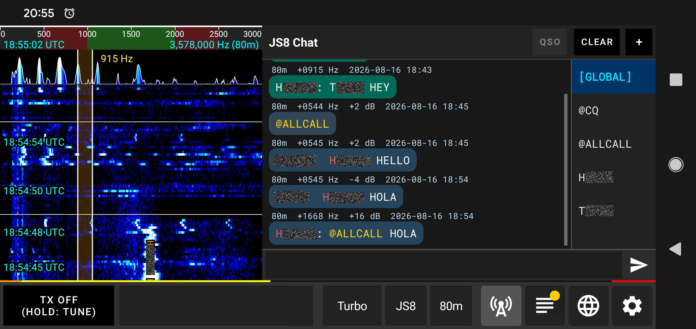
Tipos de canales y enrutamiento
El panel de chat en el lado derecho organiza el tráfico entrante y saliente en pestañas de canales independientes:
- Canal principal
[GLOBAL]: Muestra todas las transmisiones JS8 decodificadas en todo el ancho de banda de audio, así como todas sus propias transmisiones. Proporciona una visión completa en tiempo real de toda la actividad de la banda en un solo lugar. - Canales de grupos de difusión (
@CQ,@ALLCALL): Se utilizan para llamadas generales y anuncios a todas las estaciones a la escucha. Los mensajes enviados a@CQo@ALLCALLserán visibles para cualquiera sintonizado en la frecuencia. - Canales de grupos personalizados (
@NOMBREGRUPO): qFT8 admite grupos dirigidos personalizados (p. ej.,@EMERGENCY,@SOTA,@NET). Cuando se envía o recibe un mensaje con una etiqueta@GRUPO, se organiza automáticamente en su pestaña de canal correspondiente. - Canales directos de estación (Pestañas de indicativo): Al seleccionar una estación específica de la lista de canales o de la tabla de estaciones, se abre un hilo de conversación dedicado con ese indicativo.
Transmisión por radio (No es privada): Todos los mensajes JS8 se transmiten en abierto como señales digitales estándar de radioaficionados. Los chats directos con estaciones organizan el historial en una pestaña dedicada para su comodidad, pero no están cifrados ni son privados y cualquier estación que monitorice la frecuencia puede recibirlos.
Componer y enviar mensajes
- Seleccionar un destino: En el panel derecho, toque una pestaña de canal (
[GLOBAL],@CQ,@ALLCALL, un grupo o el indicativo de una estación específica). - Escribir mensaje: Escriba su texto en el cuadro de entrada inferior (admite texto ASCII estándar de hasta 100 caracteres).
- Enviar: Toque el botón Enviar.
Tocar mensajes (Chat rápido y detalles)
Al tocar cualquier mensaje en el registro de chat se abre un cuadro de diálogo de detalles con la marca de tiempo UTC completa, frecuencia de audio, SNR, cuadrícula Maidenhead y contenido del mensaje:
- Mensajes recibidos (RX): Toque CHAT para abrir inmediatamente una pestaña de chat directo con la estación emisora, o GROUP CHAT si el mensaje estaba dirigido a un grupo.
- Mensajes transmitidos (TX): Toque RESEND para rellenar automáticamente el cuadro de entrada de texto y el canal de destino para reenviar el mensaje fácilmente.
Transmisión de mensajes en múltiples fragmentos (Multi-Chunk)
Si su mensaje es más largo de lo que cabe en una sola trama de transmisión JS8:
- qFT8 divide automáticamente el mensaje en tramas consecutivas de múltiples fragmentos (multi-chunk).
- La aplicación transmite automáticamente cada fragmento en ranuras de tiempo secuenciales hasta que el mensaje completo se haya entregado.
- Un indicador de progreso visual muestra el estado de la transmisión en curso (p. ej.,
TX (1/3)). - Si necesita detener el envío antes de que finalicen todos los fragmentos, al tocar el botón Enviar/Detener se abre un aviso que le permite cancelar el resto de la cola de transmisión.
Gestión de canales (Pulsación prolongada)
Al mantener pulsada cualquier pestaña de indicativo o canal de grupo en el panel derecho, se abre un menú contextual con opciones de gestión:
- Borrar chat: Borra el historial de mensajes de la pestaña de canal seleccionada.
- Cerrar chat: Cierra la pestaña y la elimina de la barra de canales activos.
- Exportar chat: Exporta el historial completo de mensajes del canal seleccionado a un archivo de texto o menú de compartir.
Respuestas automáticas a consultas (Modo AUTO)
Con el botón AUTO activado, qFT8 responde automáticamente a las consultas dirigidas recibidas de otras estaciones (como SNR?, HW CPY?, GRID?, INFO?, STATUS? y HEARING?), así como a mensajes de latido (@HB HEARTBEAT).
Por ejemplo, si otra estación transmite SU_INDICATIVO SNR? o SU_INDICATIVO HW CPY?, qFT8 pondrá en cola y transmitirá automáticamente su reporte de señal (p. ej. SNR -08) sin intervención manual. Del mismo modo, al recibir un mensaje de latido (@HB HEARTBEAT), qFT8 pondrá automáticamente en cola un acuse de recibo de latido (HEARTBEAT SNR -08) para reportar la recepción a la estación transmisora.
Consultas dirigidas y el botón Request
El botón Request le permite enviar rápidamente consultas estándar dirigidas a la estación o grupo seleccionado sin tener que escribir la sintaxis del comando manualmente:
SNR?/HW CPY?: Solicita un reporte de señal a la estación remota.GRID?: Solicita el localizador Maidenhead de la estación.INFO?: Solicita el mensaje informativo configurado por la estación.STATUS?: Solicita el texto de estado operativo de la estación.HEARING?: Consulta la lista de estaciones escuchadas por esa estación en los últimos 10 minutos.
Servidor web de control remoto
qFT8 incluye un servidor HTTP embebido que le permite monitorizar y controlar la aplicación desde cualquier navegador web de la red. Esto es especialmente útil para la operación remota o como pantalla secundaria.
Así se ve la vista Espectrograma/Estaciones en el servidor web de control remoto:
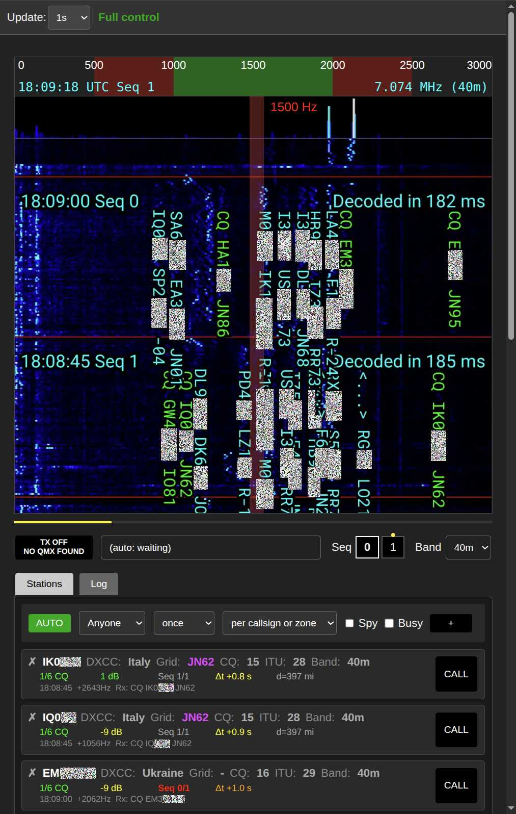
Permite operar con el botón AUTO, el menú desplegable de criterios, el botón + para añadir indicativos directamente, y la lista de estaciones con botones CALL para llamarlas manualmente.
Y así se ve la vista Espectrograma/Registro:
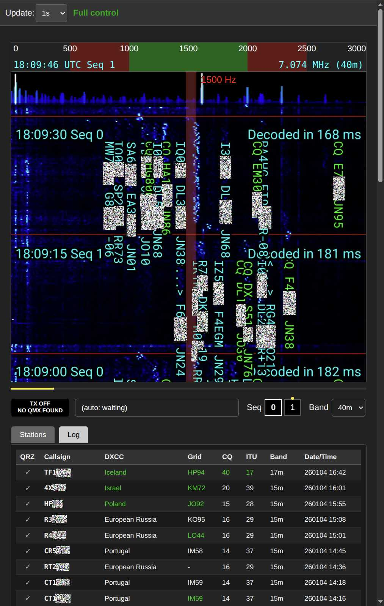
Esta vista muestra las entradas de registro más recientes.
Red y conectividad
El servidor abre un puerto TCP específico (por defecto 13497) en el teléfono. Para acceder a él, sus dispositivos deben ser capaces de "verse" entre sí en la red:
- Red local: Tanto el teléfono con qFT8 como el dispositivo de control (ordenador, tableta u otro teléfono) deben estar en la misma red Wi-Fi.
- Ajustes del router: Algunos routers tienen activada por defecto una función llamada Aislamiento de AP (o aislamiento de clientes). Esta función debe estar desactivada para que los dispositivos se comuniquen entre sí.
- Escenario de punto de acceso móvil: Si está en el campo, puede abrir un punto de acceso Wi-Fi en un teléfono (con internet) y conectar el teléfono qFT8 a esa red Wi-Fi. Tras la conexión, cierre y vuelva a abrir el servidor web en los ajustes de qFT8; la dirección IP mostrada será entonces accesible desde el teléfono que proporciona el punto de acceso.
- Acceso a internet: Acceder al servidor desde fuera de casa (a través de internet) requiere la redirección de puertos (Port Forwarding) en la configuración del router (mapeando la IP interna y el puerto a uno externo). Tenga en cuenta que, por lo general, esto no funcionará a través de conexiones 5G/LTE debido a las restricciones NAT de los operadores.
Niveles de acceso
Puede configurar el nivel de seguridad remota en el panel de Ajustes:
- Solo lectura: Permite ver el espectrograma en directo, las estaciones activas y el registro de QSO. No se puede realizar ninguna acción.
- Lectura + Detener TX: Principalmente un modo de seguridad. Permite ver todos los datos y permite desarmar el transmisor (detener la TX) en caso de emergencia, pero no permite iniciar la TX ni cambiar los ajustes.
- Control total: Concede autoridad completa sobre la aplicación, permitiendo todas las funciones interactivas.
Nota de seguridad: Cualquier persona con acceso a la red, dirección IP y puerto tendrá el nivel de control que haya configurado. Si se establece en Control total, podrían llegar a iniciar transmisiones utilizando la estación.
Capacidades
En el modo de Control total, la interfaz web ofrece casi todo lo que ofrece la interfaz de la aplicación:
- Modos de operación: Alternar entre los modos AUTO y manual CALL.
- Estrategia: Cambiar los criterios de AUTO (Anyone, DXCC, Grid, etc.) y las restricciones de búsqueda.
- Transmisión: Iniciar/detener manualmente la TX, elegir mensajes de TX específicos y cambiar la FT8 sequence (0/1).
- Frecuencia y banda: Pulsar en el espectrograma web para ajustar el desplazamiento de frecuencia o cambiar la banda de radio activa.
Nota: La interfaz web está diseñada para seguir respondiendo incluso si la pantalla del teléfono físico se vuelve lenta debido a las interferencias de RF, proporcionando una alternativa fiable de control.
Nota: El servidor web funcionará con la pantalla apagada si los ajustes para ejecutarse en segundo plano están activados (por defecto se mantiene la ejecución en segundo plano cuando qFT8 está conectado a un transceptor).
Solución de problemas
El dispositivo Android no reconoce el transceptor o este se desconecta
Casi siempre se trata de un problema de conectividad de hardware o de interferencias de radio. Las conexiones USB son sensibles a las vibraciones, la calidad del cable y la pelusa que habita en el puerto USB del teléfono.
Intente lo siguiente:
- Utilizar un cable USB de alta calidad y corto (el uso de un cable más corto puede ayudar significativamente), y asegúrese de que el puerto del teléfono esté limpio y la conexión sea firme.
- Si los problemas ocurren específicamente durante la transmisión, podría deberse a interferencias de radio. Agregar choques o ferritas al cable USB podría ayudar a solucionarlo. También puede intentar transmitir en una banda diferente, ya que a veces los dispositivos solo son sensibles a las interferencias en ciertas bandas.
En lugar de recibir la señal del transceptor, qFT8 recibe audio del micrófono
Esto indica que el teléfono está utilizando su micrófono interno porque no reconoce el transceptor como una fuente de audio externa. Las causas más comunes son:
- El cable USB no es para datos (es solo de carga).
- El adaptador USB (OTG) está defectuoso o es incompatible.
- El cable está conectado en la dirección equivocada (algunos cables son direccionales).
Intente lo siguiente: Utilizar un cable USB diferente, un adaptador diferente o invertir las conexiones del cable.
No se recibe ninguna señal; la cascada está totalmente en negro
Si la cascada permanece totalmente negra tanto si el transceptor está conectado como si no lo está, lo más probable es que qFT8 no tenga los permisos necesarios para acceder al audio.
Intente lo siguiente: Vaya a los Ajustes > Aplicaciones > qFT8 > Permisos de su teléfono y asegúrese de que se permite el uso del Micrófono (o grabación de audio) mientras se utiliza qFT8. Alternativamente, desinstale qFT8 por completo, vuelva a instalarlo y acepte todas las solicitudes de permisos en el primer inicio.
Las señales son visibles, pero no se decodifica ningún mensaje
Si ve "líneas onduladas" verticales en la cascada (señales FT8) pero no aparece ningún texto en la pestaña Estaciones, es posible que el reloj no esté sincronizado.
Intente lo siguiente:
- Asegúrese de tener acceso a internet y vuelva a abrir la aplicación para forzar una sincronización NTP.
- Si no hay internet disponible, intente una sincronización GPS.
- Si esto tampoco funciona pero se ven tonos de mensajes en el espectrograma, active una sincronización de hora de emergencia desde los mensajes, en el menú de ajustes de hora y ubicación.
- Asegúrese de que la radio está recibiendo realmente señales del aire.
Si no aparecen rayas onduladas en la cascada, es posible que la banda esté cerrada o que la antena esté desconectada o desajustada.
Los mensajes se decodifican demasiado tarde
El procesador del teléfono puede ser demasiado lento para decodificar los mensajes a tiempo.
Intente lo siguiente: Asegúrese de cambiar a decodificación rápida (Fast decode) en los ajustes, y pruebe a adelantar la hora de decodificación (por ejemplo, a 13000 ms) para crear más margen de decodificación, a costa de perder potencialmente algunos mensajes tardíos en cada ciclo.
Error "SWR superó el umbral — transmisión detenida" en el transceptor QMX
Si qFT8 muestra 0 W mientras transmite, hay dos causas probables:
1. Protección SWR
Si la pantalla LCD del QMX muestra una "S" después de la frecuencia, significa que la protección SWR se activó. Esto significa que la antena no está correctamente ajustada para la banda actual, y el QMX ha dejado de transmitir para proteger su circuitería.
Además, qFT8 cuenta con su propio ajuste configurable de umbral de SWR en los ajustes de la aplicación. Cuando la SWR medida supera este umbral, qFT8 detendrá automáticamente la transmisión para proteger su equipo.
- Firmware 1_04_004+: qFT8 restablece automáticamente la protección SWR al final del ciclo.
- Firmware 1_03_000+: Puede configurar la opción "SWR Protection reset options" como Timer o TX->RX en el menú del QMX. Esto permite que qFT8 siga operando sin que usted tenga que tocar físicamente el transceptor.
- Firmware antiguo: En versiones de firmware del QMX anteriores a 1_03_000, debe reiniciar manualmente el transceptor (apagar/encender) o entrar y salir del menú TUNE del QMX para borrar el error.
Nota: qFT8 espera 1 segundo después del inicio de la transmisión antes de comprobar si hay 0 W para evitar falsos positivos mientras el QMX se pone en marcha. Si el QMX se recupera y la potencia sube por encima de 1 W, el indicador del problema desaparece automáticamente.
2. El firmware no admite medición de potencia
Si el QMX no muestra que la protección SWR está activada, y muestra que la transmisión se está realizando correctamente, puede que el firmware sea antiguo y no admita la medición de potencia. Dispositivos como el QDX tampoco admiten la medición de potencia. qFT8 no sabe cómo interpretar 0W y se confunde.
Intente lo siguiente: Si el firmware de su QMX es antiguo, actualícelo. Si está usando un QDX, no hay solución para esto.
3. La señal de audio no llega al QMX
Si el QMX no muestra el icono "S" después de la frecuencia, es probable que el transceptor no esté recibiendo una señal de audio adecuada del teléfono. El volumen puede ser demasiado bajo (señal insuficiente) o demasiado alto (la distorsión/saturación hace que el QMX rechace la señal).
Intente lo siguiente: Compruebe el indicador de señal de su QMX. Un solo punto significa que no hay audio; dos puntos significan que hay audio pero no es lo suficientemente fuerte. Vaya a la sección de ajustes de FT8 y ajuste la opción "Set system volume to [X] when transmitting" a diferentes valores (p. ej. 70%, 80%, 90%) para encontrar el nivel adecuado para su dispositivo.
4. El SWR es bajo al sintonizar, pero se activa la protección SWR
Parece que el SWR se dispara o alcanza picos de alta potencia durante algunos instantes de la transmisión real, lo que activa la protección SWR. Este es un indicador de una antena delicada (p. ej. bucles magnéticos), un cable en mal estado, una mala conexión o un problema en la configuración.
Intente lo siguiente: agregar choques de modo común (como cuentas de ferrita) debería reducir la corriente de modo común.
¿Qué es la notificación de Android de qFT8?
Esta notificación permite que qFT8 siga procesando audio y gestionando los QSO cuando minimiza la aplicación o apaga la pantalla.
- Por defecto, se activa automáticamente cuando se conecta un transceptor.
- Puede desactivar esto en los ajustes de qFT8, pero en ese caso qFT8 dejará de funcionar en segundo plano.
- Puede pulsar STOP en la notificación para cerrar qFT8 por completo.
qFT8 deja de funcionar cuando la pantalla está apagada
Algunos fabricantes de Android implementan optimizaciones de batería muy agresivas que pueden cerrar las aplicaciones en segundo plano aunque usted haya concedido los permisos iniciales.
Compruebe que ha concedido los permisos: Vaya a Ajustes > Aplicaciones > qFT8 > Batería del teléfono y seleccione "Sin restricciones" (o "No optimizar").
Los botones actúan de forma extraña o la pantalla no responde durante la TX
Esto está causado por Interferencias de RF (RFI). Si la antena está cerca del teléfono o el cable está mal blindado, la energía de radio puede interferir con el digitalizador táctil.
- Consejo: Utilice un cable USB blindado o coloque una ferrita en el cable.
qFT8 se ve diferente a las capturas de pantalla de este manual
La interfaz de usuario de la aplicación se actualiza de vez en cuando, por lo que algunos elementos visuales menores pueden haber cambiado un poco desde que se tomaron las capturas de pantalla. Sin embargo, si faltan partes importantes de la interfaz o si los colores están muy alterados (por ejemplo, la barra de progreso amarilla, los selectores de secuencia, etc.), esto podría deberse a que el modo oscuro del sistema de su teléfono está forzando y alterando incorrectamente la paleta de colores de la aplicación.
Intente lo siguiente: Si el modo oscuro de su teléfono está causando este comportamiento, intente desactivarlo temporalmente o añada qFT8 a la lista de exclusiones del modo oscuro para restaurar el diseño correcto.
qFT8 dice "NO RADIO" aunque el transceptor está conectado
El problema es probablemente que no concedió los permisos para conectar qFT8 al transceptor. A veces esto ocurre porque toca en algún lugar fuera del diálogo de permisos y el diálogo se cierra.
Intente lo siguiente: Desconecte y vuelva a conectar el transceptor, esto debería de activar la solicitud de nuevo. Para mayor comodidad, marque la opción "Abrir siempre qFT8 cuando se conecte el transceptor" para no volver a tener este problema.
qFT8 muestra la distancia en millas y la quiero en kilómetros (o viceversa)
Esto viene de la configuración regional del sistema operativo (es decir, la selección de idioma).
Intente lo siguiente: Cambiar esa configuración al país correcto (por ejemplo, Español (Estados Unidos) para millas, Español (España) para kilómetros) lo solucionará.
qFT8 muestra una potencia de transmisión baja (p. ej. 0.1W) al transmitir a >10W en QMX
Este es un error (bug) conocido en el firmware del QMX (al menos hasta la versión 1.03.000). Si está utilizando el "2x4 mod" (por ejemplo, en un QMX+) y su potencia de transmisión supera los 9.9W, el formato de la radio se reinicia. Por ejemplo, el transceptor reportará 10.1W a la aplicación como 0.1W a través del protocolo secundario CAT.
Intente lo siguiente: No hay ninguna solución dentro de qFT8, ya que la aplicación se limita a leer el valor que recibe. Puede ignorar de forma segura este error de visualización o reducir su potencia por debajo de los 10W para mantener las lecturas precisas hasta que el error sea solucionado en el firmware del transceptor.
No se pueden exportar los registros ADIF al almacenamiento local usando Share
El método por defecto Share depende del mecanismo nativo de compartir de Android para exportar registros. A veces, el menú para compartir archivos de su dispositivo no ofrece una opción directa para guardar en el almacenamiento local.
Intente lo siguiente: Cambie el Method de exportación a Local save en los ajustes. Esto utiliza el selector de archivos de Android para guardar directamente el archivo en su almacenamiento local sin depender del menú para compartir.
qFT8 no puede decodificar algunos mensajes
Intente lo siguiente: Habilite la decodificación profunda (deep decode) en los ajustes. La decodificación profunda realiza una decodificación recursiva y es capaz de decodificar más mensajes cuando la banda está congestionada, a expensas de potencia de procesamiento adicional. Vigile el espectrograma: si el tiempo de decodificación profunda es demasiado alto en su dispositivo (por ejemplo, superior a 1 segundo) y la aplicación no puede tomar decisiones a tiempo, desactive la decodificación profunda.
qFT8 se queda colgado o se comporta de forma extraña
Si esto ocurre solo durante la transmisión, es probable que se deba a unas RFI extremas como se menciona arriba. Si ocurre en otros momentos, desplácese hasta la parte inferior de la pestaña Ajustes y utilice el enlace " Email me to report issues and bugs"
↑ Volver a la Tabla de Contenidos